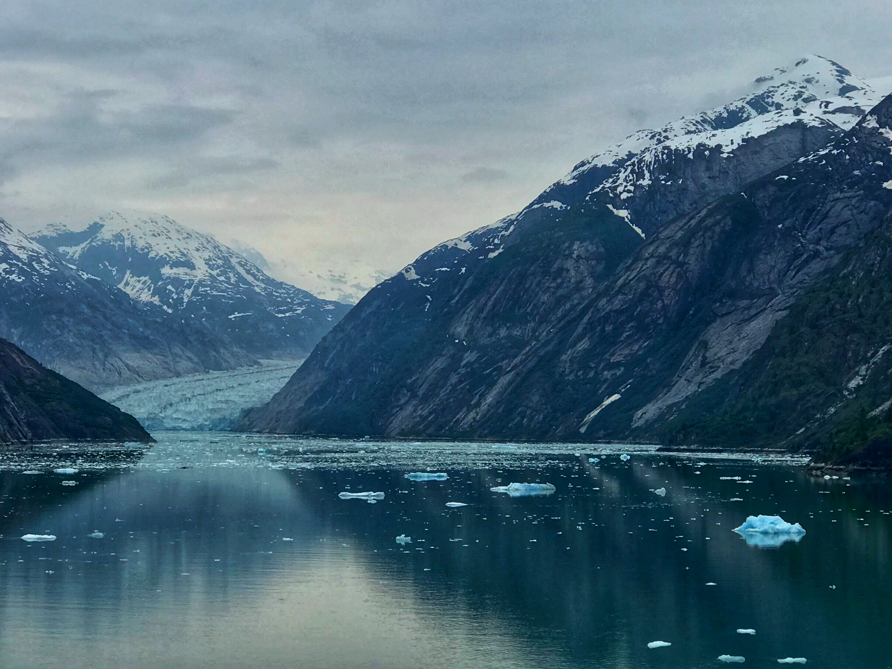

Also known as the “Last Frontier,” Alaska is a state in the northwestern region of the United States. Alaska became a US state on January 3, 1959, making it the 49th official state. With a population of 732,673, Alaska is the largest state by area in the US. Alaska is nicknamed the “Last Frontier” due to the potential and opportunities yet to be uncovered in its large terrain. This state is both remote and isolated, full of unexplored wilderness and icy glaciers. The Last Frontier is also famous for its national parks, wildlife, tour cruises, and Northern Lights.

My trip to Alaska was extremely fun. I went on a cruise there called Ovation of the Seas. The ship was amazing! It had so many fun activities like bumper cars, ping pong, indoor skydiving, rock climbing, a water park, pools, a track, a theater, and soo many restauraunts serving some very tasty food. And the cruise also included a thing called North Star where you could view the amazing sights of Alaska as well as the rest of the cruise 300ft above sea level! My foot was bigger than the pool from my perspective when it reached max height! Off the cruise, we went to Juneau and Skagway where we had lots of fun touring and taking pictures at some of the beautiful sights in Alaska. We also visited 2 glaciers: the Mendenhall Glacier, and the Endicott Arm & Dawes Glacier. And we just generally enjoyed the natural beauty of Alaska.